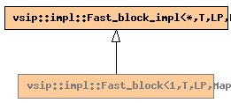

Global Namespace
Inheritance Tree
Inheritance Graph
Name Index
template <
typename
T,
typename
LP,
typename
Map>
class
vsip
::
impl
::Fast_block<1,T,LP,Map>
File:
../../../vsip/core/fast_block.hpp
Fast_block specialization for 1-dimension block.
Primary template:
Fast_block

-
Public Member functions
constructor
Fast_block
(const
Domain
<*>&
dom
, const Map&
map
=
Map ( )
)
constructor
Fast_block
(const
Domain
<*>&
dom
, T
value
, const Map&
map
=
Map ( )
)
-
Private Typedefs
Fast_block_impl
<*, T, LP, Map>
bast_t
Generated on Wed Sep 30 14:29:02 2009 by
synopsis
(version 0.12)


 synopsis (version 0.12)
synopsis (version 0.12)